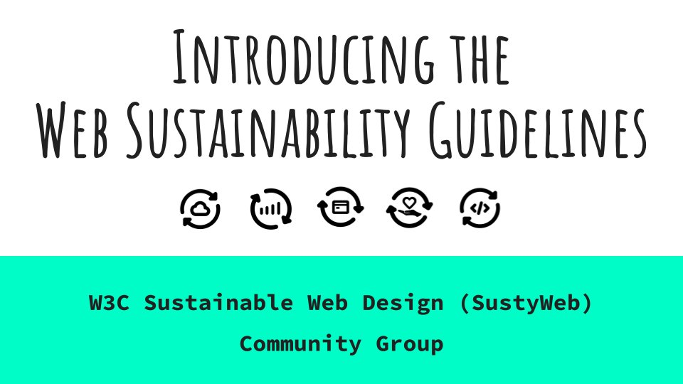

11-15 Sept.: This is the #w3cTPAC week, dedicated to discussions in and between groups to gather new ideas, raise questions and better coordinate the #WebStandards work. The meeting is hybrid with the main in-person hub in Seville üá™üá∏
https://www.w3.org/2023/09/TPAC/
üóìÔ∏èSeptember@w3c: the W3C community is going to #Seville üá™üá∏ for TPAC!
https://twitter.com/w3cdevs/status/169760732409172418912 Sept.: @w3c member-only (Advisory Committee - AC) meeting that focuses on strategic issues facing the Consortium, and future directions envisioned by the membership and staff #w3cTPAC
https://twitter.com/w3cdevs/status/169760732691865222913 Sept.: Already 57 proposed #w3cTPAC breakout sessions! These are series of 1-hour sessions on community identified topics https://github.com/w3c/tpac2023-breakouts/issues
https://twitter.com/w3cdevs/status/169760732960306386627 Sept.: @BillKasdorf, W3C Global Publishing Evangelist, will join others in a panel "#AI: Revolution and Opportunity in Trade Publishing" held as part of the @PublishersWkly online conference https://www.publishersweekly.com/pw/by-topic/industry-news/trade-shows-events/article/92954-markus-dohle-ethan-mollick-to-keynote-ai-webinar.html
https://twitter.com/w3cdevs/status/169760733628044114526-28 Sept.: virtual #W3CWorkshop "Secure the Web Forward" that brings together experts in standards and best practices needed to secure #WebApps #security #developers
https://www.w3.org/2023/03/secure-the-web-forward/index.html
https://twitter.com/w3cdevs/status/169760733361277345128-30 Sept.: Paris Web 2023 - online event @parisweb https://paris-web.fr
https://twitter.com/w3cdevs/status/1697607339807736130For #w3cTPAC, @tidoust demonstrates how web technologies such as #WebCodecs, #WebGPU, #WebRTC, #Streams, etc. create a very powerful platform to process video frames in real-time. Slides and transcript avail. at https://www.w3.org/2023/09/TPAC/demos/video-processing.html
https://youtu.be/bEP5VrMtGaE
For in-depth insight, read the 2-part article that explores how #WebApps can build processing media pipelines, by @tidoust and @dontcallmeDOM https://twitter.com/w3cdevs/status/1640689570650914818
https://twitter.com/w3cdevs/status/1699004521341440322CSS View Transitions Module Level 1 allows #developers to create rich transitions between two page states. It defines a set of #APIs that allow DOM changes to smoothly animate between states.
The @csswg invites implementations of the "#CSS View Transitions Module Level 1" specification #CandidateRecommendation #timetoimplement
https://www.w3.org/TR/css-view-transitions-1/ https://twitter.com/w3c/status/1698997241627758898
https://twitter.com/w3cdevs/status/1699033396725325973Authors eagerly await this feature in browsers, sparking numerous demos. Watch #CSS View Transitions in action with this #w3cTPAC video by @bramus!
https://youtu.be/xZteiW-cun8
https://twitter.com/w3cdevs/status/1699033399158100082Please send comments and feedback to the related #GitHub repo: https://github.com/w3c/csswg-drafts/labels/css-view-transitions
https://twitter.com/w3cdevs/status/1699033404698714575CSS View Transitions Level 1 focuses on transitions within a single page. The Level 2 of the spec., released as a first public working draft today, extends it to transitions between two web pages #FPWD #timetogiveinput
https://www.w3.org/TR/css-view-transitions-2/
https://twitter.com/w3c/status/1699000753531027891
https://twitter.com/w3cdevs/status/1699033401720742171#Translation https://twitter.com/webi18n/status/1699006481654329855
https://twitter.com/w3cdevs/status/1699042188846342624For #w3cTPAC, @ddbeck, #WebDX #CommunityGroup member, presents the `web-features` project that seeks to understand the expectations and desires of web #developers, catering to their needs and interests #WebPlatform
Transcript at https://www.w3.org/2023/09/TPAC/demos/web-features.html
https://youtu.be/5jVwu3jwBmE
https://twitter.com/w3cdevs/status/1699367571357605966For #w3cTPAC, the @wot crafted an introductory video on the Web of Things (#WoT), as part of a tutorial series covering its applications and tools for newcomers.
Video transcript is at https://www.w3.org/2023/09/TPAC/demos/what-is-wot.html
üé¨ https://youtu.be/a6gShw2EV4U
https://twitter.com/w3cdevs/status/1699427027462357300For #w3cTPAC, @patrick_h_lauke gives an overview of the Pointer Events #WorkingGroup, and goes over changes and additions (w/ short demos!) brought in the Pointer Events Level 3 specification.
Slides and transcript avail. at https://www.w3.org/2023/09/TPAC/demos/pointer-events.html
https://youtu.be/ourOCCThDZ4
https://twitter.com/w3cdevs/status/1699726350662181031For #w3cTPAC, @hochsays gives updates of the @w3caudio work and shares amazing apps and projects #developers have created with web #music technology.
Slides and transcript at https://www.w3.org/2023/09/TPAC/demos/web-audio.html
https://youtu.be/at4NazZOgsU
https://twitter.com/w3cdevs/status/1699784990865907912üÜï Web Sustainability Guidelines (WSG) 1.0 promote eco-friendly digital products and services that put people and planet first. They are best practice aimed at end-users, web workers, stakeholders, tool authors, educators, and policymakers #Sustainability https://w3c.github.io/sustyweb/ https://twitter.com/w3c/status/1699874525008040261
üåç The digital industry emits 2-5% of global emissions, more than aviation! WSG offers tips like data transfer cutback, image optimization and green hosting use to reduce the environmental impact of web development and design #FootPrint
https://twitter.com/w3cdevs/status/1700136872826040699We welcome your participation in the Sustainable Web Design (SystyWeb) #CommunityGroup - https://www.w3.org/community/sustyweb/ - as well as feedback via the #GitHub repo: https://github.com/w3c/sustyweb/
https://twitter.com/w3cdevs/status/1700136884658168272üìö With 93 guidelines and 232 success criteria inspired by #WCAG, WSG covers User Experience, Web Development, Hosting, and Business Strategy. Rea "WSG at a glance": https://w3c.github.io/sustyweb/glance.html for a quick review of the guidelines
https://twitter.com/w3cdevs/status/1700136880744865996For #w3cTPAC, @lbassbouss demoes "#Metaverse Cloud Rendering on the Web" as a use case currently under discussion within the @w3c Web & Networks #InterestGroup
#EdgeRendering #WebRTC #WebCodecs #WebTransport
https://www.w3.org/2023/09/TPAC/demos/web-networks.html
https://youtu.be/AR4l7xIPdZA
https://twitter.com/w3cdevs/status/1701536195468001374Submit your proposals for Interop 2024 by @rachelandrew, @robertnyman, @foolip, and @_nairnm https://web.dev/interop-2024-proposals/
https://twitter.com/w3cdevs/status/1702699639898571246For #w3cTPAC, M. McCool and S. Divakaran present distributed workers as a proposal to extend the web client program model to support distributed computing. #Wasm #WebWorkers #EdgeComputing Web&Networks #InterestGroup
Transcript at https://www.w3.org/2023/09/TPAC/demos/distrib-workers.html
https://youtu.be/wb58LeRkv7s
https://twitter.com/w3cdevs/status/1704107337517011355üì¢Next week! This #W3CWorkshop is composed of 3 live sessions:
- 26 Sept.: Supply Chain #Security
- 27 Sept.: #JavaScript Security
- 28 Sept.: #Developer Awareness
Attendance is üÜì for all invited participants. Find out how to register: https://www.w3.org/blog/2023/w3c-virtual-workshop-on-secure-the-web-forward-26-28-september-2023/ https://twitter.com/w3c/status/1704888606609797503
https://twitter.com/w3cdevs/status/1704900021747937728Dive into @w3cTAG's Privacy Principles! @jyasskin presents ethical web principles for #privacy. The doc. aims to set constraints, provide checklists, and explain web norms #PrivacyMatters #EthicalWeb
https://www.w3.org/2023/09/TPAC/ac-privacy-principles (incl. transcript)
https://youtu.be/_PRZV6lMupE
The document has two main sections: background knowledge and principles. It emphasizes collective governance, user agent duties, minimizing data, protecting sensitive information, de-identifying data, group privacy, and safeguarding against abuse.
https://www.w3.org/TR/privacy-principles/
https://twitter.com/w3cdevs/status/1706336067559764409It focuses on respectful consent requests, non-intrusive notifications, and user data choice. Vulnerable users and children are considered. Learn how to protect your online privacy! #OnlineSafety #DataProtection
https://twitter.com/w3cdevs/status/1706336073377329397The Privacy Principles task force is finalizing the document, promoting user autonomy, and respecting consent. Get involved an send suggestions via #GitHub at https://github.com/w3ctag/privacy-principles
https://twitter.com/w3cdevs/status/1706336075910619136Dr. Humera Noor Minhas (@eyeo) explains that building #EthicalAI isn't just about guidelines; it's about practice. Let's embed ethics into the heart of #AI development right from the start #ethics #w3cTPAC
https://www.w3.org/2023/09/TPAC/ac-lt-ethical-ai (incl. transcript)
https://youtu.be/UJ8j0XNduJM
W3C's Ethical Principles for Web Machine Learning exist, but how do we make them a reality? Train and involve your teams, and make ethics part of your processes!
https://www.w3.org/TR/webmachinelearning-ethics/
https://twitter.com/w3cdevs/status/1706668399622058086ü§ñThis #EthicalAI topic was also discussed during a #w3cTPAC breakout session. Find the minuted discussion and other info at https://www.w3.org/2023/09/TPAC/breakouts.html#b-9f1667d4-a23b-4893-80aa-06d5ecca8434
https://twitter.com/w3cdevs/status/1706668406286721109üîú Today's live session is about "Supply Chain Security" (from 3pm to 5pm UTC)
Check the session's agenda and papers at: https://www.w3.org/2023/03/secure-the-web-forward/agenda.html#session-1
#security #developers cc @tidoust @torgo https://twitter.com/openssf/status/1706678265698525571
https://twitter.com/w3cdevs/status/1706682507339370758üå± The #ClimateCrisis is a major issue, and the digital sector plays a significant role. It contributes 2-5% of global greenhouse gas emissions throughout its lifecycle, starting from manufacturing of digital equipment through the use of networks, data centers, and your devices
Let's make the web more #sustainable! At #w3cTPAC, Łukasz Mastalerz (@ClimateArc) introduces #SustainableWeb guidelines for web creators to make sure their content has as small negative impact on the environment as possible
https://www.w3.org/2023/09/TPAC/ac-lt-sustyweb
https://youtu.be/86xcPqL-0Hc
https://twitter.com/w3cdevs/status/1706999348888797443üìö Inspired by @wai's work on web #accessibility, the SustyWeb #CommunityGroup worked with experts from nearly 50 organizations, resulting in a draft of 93 guidelines with 200+ success criteria #SustainableWeb
Read more: https://twitter.com/w3cdevs/status/1700136872826040699
https://twitter.com/w3cdevs/status/1706999352135196905The Web Sustainability guidelines was also a #w3cTPAC breakout session topic. Find the minuted discussion and other info at: https://www.w3.org/2023/09/TPAC/breakouts.html#b-e29ce12c-b91a-4714-95ec-a0a6775daafb
https://twitter.com/w3cdevs/status/1706999355108937924üîú Today's live session is about "#JavaScript Security"
(from 3pm to 5pm UTC)
Check the session's agenda and papers at: https://www.w3.org/2023/03/secure-the-web-forward/agenda.html#session-2
#security #developers cc @tidoust @torgo https://twitter.com/openssf/status/1706678265698525571
https://twitter.com/w3cdevs/status/1707026750192890289Do you trust how your personal data is managed online today? @0x8DEB (@digi_vlaanderen) explores data handling and how decentralized data storage servers can give control back to users #Solid #privacy #w3cTPAC https://www.w3.org/2023/09/TPAC/ac-lt-user-data-control (w/ slides+transcript)
https://youtu.be/0EmMx6X5wyU
The challenge is that while we gather more data for business, users often face obscure policies and have limited control. Regulations like #GDPR attempt to address this, but they lag behind real-world practices
https://twitter.com/w3cdevs/status/1707318432822186121Based on the Solid ecosystem, the @w3c Solid #CommunityGroup worked on a proposed charter for a Solid #WorkingGroup: https://solid.github.io/solid-wg-charter/charter/ (currently under review)
https://twitter.com/w3cdevs/status/1707318437968486510üîú Today's live session (and last one) is about "#Developer Awareness" (from 3pm to 5pm UTC) Check the session's agenda and papers at: https://w3.org/2023/03/secure-the-web-forward/agenda.html#session-3 #security cc @tidoust @torgo https://twitter.com/openssf/status/1706678265698525571
https://twitter.com/w3cdevs/status/1707402971976253793